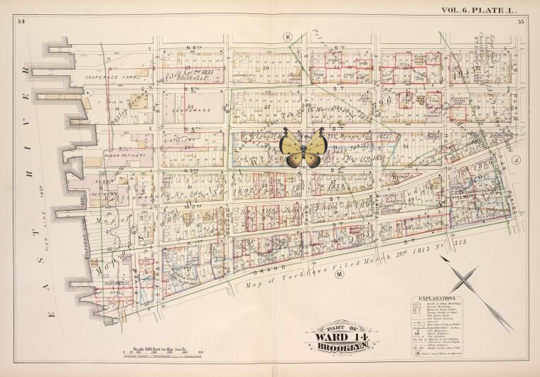

Pokémon in the NYPL archives
2018-6-20 12:10:04

|
Vol. 6. Plate, L. [Map bound by N.6th St., Sixth St., Grand St., East River; Including N.5th St., N.4th St., N.3rd St., N.2nd St., Fillmore Pl., N.1St St., First St., Second St., Third St., Fourth St., Fifth St.]
!